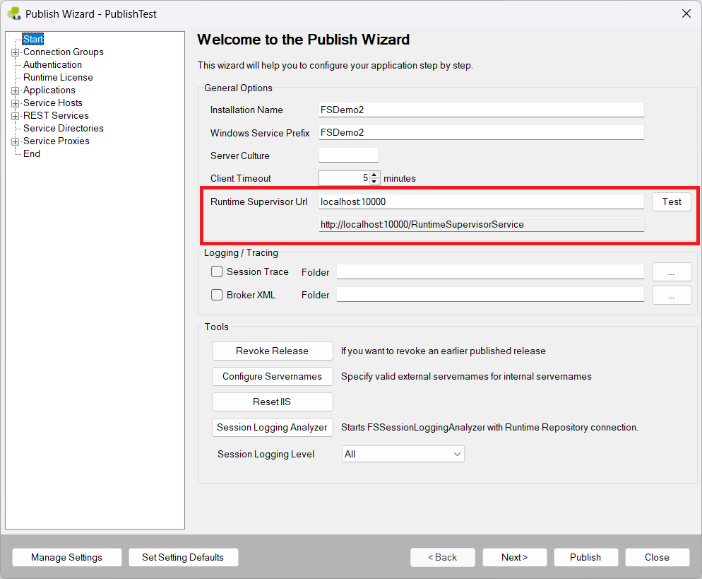
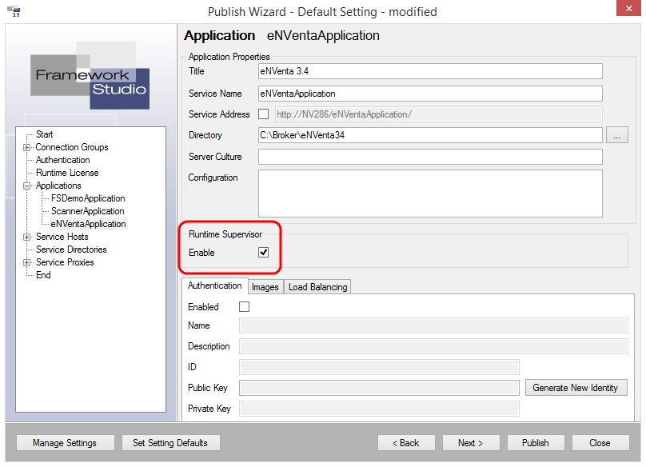

Einrichtung der Clients
Um eine Verbindung mit dem Runtime Supervisor aufbauen zu können, muss jedes Observable wissen, wo dieser zu erreichen ist. Die Kommunikation erfolgt über ASP.NET SignalR. Um eine bidirektionale Kommunikation zu initiieren bedarf es hierzu nur der URL des Zielservers.
Broker und Service Hosts
Um einem Broker oder Service Host in Framework Studio die URL des Runtime Supervisor mitzuteilen, gibt es im Publish Wizard ein entsprechendes Textfeld.

Im Textfeld “Runtime Supervisor URL” auf der Startseite des Publish Wizard müssen der Server und Port, auf dem der Runtime Supervisor läuft, im Format [Server]:[Port] angegeben werden. Im darunter liegenden Textfeld wird die URL automatisch aufbereitet angezeigt. Diese URL gilt nun für alle Broker und Service Hosts der Framework Studio Runtime bzw. für dieses Setting gleichermaßen.
Über den Button “Test”, kann die Kommunikation getestet werden.
Um festzulegen, ob für einen bestimmten Broker oder Service Host der Runtime Supervisor aktiviert sein soll oder nicht, kann über die entsprechende Seite im Publish Wizard eingestellt werden.

Für jede Framework Studio Application (Broker) kann über die Checkbox “Enable” der Runtime Supervisor aktiviert oder deaktiviert werden. Dasselbe gilt auch für die Service Hosts.

Wird ein Broker oder ein Service Host gepublisht, registriert er sich automatisch am Runtime Supervisor und wird von da an von diesem überwacht.
Authentication Service

Für den Authentication Service gibt es im dazugehörigen Konfigurationsassistenten den Reiter “Runtime Supervisor”. Über die Checkbox “Enable” kann der Runtime Supervisor aktiviert oder deaktiviert werden. Im Textfeld “Runtime Supervisor URL” müssen der Server und der Port, auf dem der Runtime Supervisor läuft, im Format [Server]:[Port] angegeben werden. Im Textfeld daneben wird die URL automatisch aufbereitet angezeigt.
Über den Button “Test”, kann die Kommunikation getestet werden.
Print Service

Für den Print Service gibt es im dazugehörigen Konfigurationsassistenten den Reiter “Runtime Supervisor”. Über die Checkbox “Enable” kann der Runtime Supervisor aktiviert oder deaktiviert werden. Im Textfeld “Runtime Supervisor URL” müssen der Server und der Port, auf dem der Runtime Supervisor läuft, im Format [Server]:[Port] angegeben werden. Im Textfeld daneben wird die URL automatisch aufbereitet angezeigt.
Über den Button “Test”, kann die Kommunikation getestet werden.
Document Service
Im Gegensatz zum Authentication Service oder Print Service bietet der Document Service keinen Konfigurationsassistenten an. Die Aktivierung des Runtime Supervisor muss hier über die XML-Konfigurationsdatei angepasst werden. Dem Document Service liegt eine Template-Datei bei, in der die zwei nötigen Einträge schon vorhanden sind und nur noch konfiguriert werden müssen.
Wird eine ältere Konfigurationsdatei verwendet, muss überprüft werden, ob die nachfolgenden Einträge existieren. Ist dies nicht der Fall, müssen sie ggf. ergänzt werden.
Im Element
Das Element „RuntimeSupervisorEnabled“ definiert, ob der Runtime Supervisor für den Document Service aktiviert („True“) werden soll oder nicht („False“). Das Element „RuntimeSupervisorUri“ definiert die URL, unter der der Runtime Supervisor zu finden ist. Die URL muss im Format http://[Server]:[Port]/RuntimeSupervisorService angegeben werden.